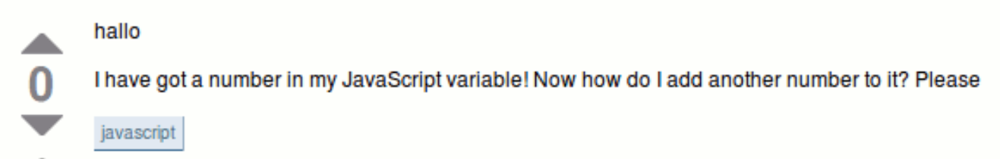
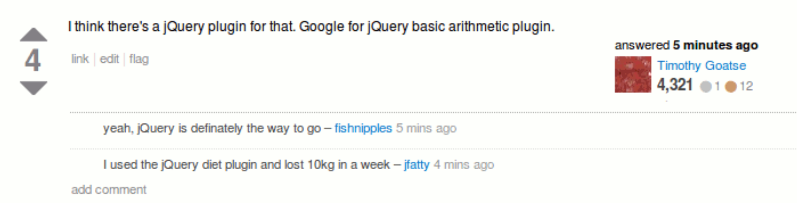
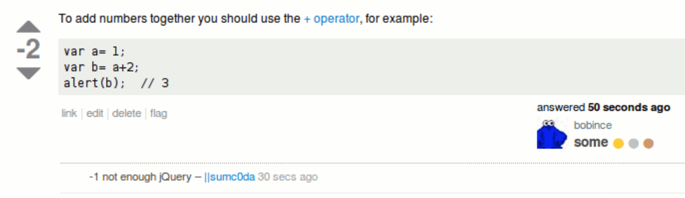
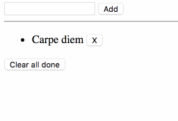

jQuery
God's gift to women the WebSections in this chapter
jQuery intro
What is the fuss about?
Understanding what jQuery is
As life on Earth is based on carbon, so is the internet based on jQuery.

The library functionality is exposed through a global jQuery object created when we run the code. It also has $ alias if you want to be more succinct.
jQuery === $ // true
jQuery achieved its popularity through four good ideas:
- ause CSS selectors
- bpresent a unified and simplified façade
- chave implicit element looping
- duse method chaining
We'll now talk through them one by one!
First off, using CSS selectors to match elements.
let firstParagraph = $("p:first-child");
The success of this idea was what caused querySelector(All) to be added to regular JavaScript.
Second, the façade - jQuery made better methods to interact with the DOM, and ensures that they work the same in all browsers:
firstParagraph.addClass("fadeanim");
(because earlier, node.classList didn't exist!)
The jQuery façade has less value now since
- browsers are much more standards compliant
- the DOM has been much improved
But it is still pretty nice!
Third, implicit looping - if a jQuery selection catches multiple elements, we can still act on all elements with a single method call:
let buttons = $("button");
buttons.attr("disabled",true);
Some methods make no sense to use on many elements at once - they will operate on the first element in the selection.
Finally, chaining. Almost all jQuery methods return the selection we were working on.
That means that instead of doing this...
let buttons = $("button");
buttons.attr("disabled",true);
buttons.addClass("blocked")
...we can do this:
$("button").attr("disabled",true).addClass("blocked");
Although the need for jQuery has diminished, it is still very popular.
And as its API is rather easy, using jQuery can be a better way to learn the DOM than the DOM itself!
So: definitely learn jQuery, but make sure to also understand what is actually going on.
Practice from time to time to do it without jQuery.
Peolpe's frequent inability regarding this has given rise to a special kind of humor:




Ending by zooming out; this is what you'll be doing with jQuery most of the time:
$(someSelector).someMethod();
We
- select some elements, and
- do something with them
jQuery refresher
What the fuzz is about
Learn the basics of jQuery
Let's see how some common tasks are done with jQuery:
- anode references
- bnode manipulation
- cnode creation
- devent handling
We get node references by passing a CSS selector to the jQuery function:
// returns a jQuery collection of all elements matching that selector
let collection = jQuery(".someClass");
You'll rarely see jQuery being used though, instead we work with the $ alias:
let collection = $(".someClass");
Here's some common manipulations:
collection.html("<strong>verboten</strong>");
collection.text("unavailable");
collection.addClass("hide");
collection.attr("data-ref","Ek#AfZW2");
collection.empty(); // killing all children
Note that unlike the DOM, jQuery doesn't have different methods for getting 1 or many nodes.
We can manipulate the resulting collection as if it was one node, and jQuery will do the changes to all nodes.
That means that this regular JS...
let nodes = document.querySelectorAll(".french");
for(let node in nodes){
node.innerHTML = "<em>click to translate</em>";
}
...can be done like this in jQuery:
let collection = $(".french");
collection.html("<em>click to translate</em>");
Commonly we skip the variable and chain instead:
$(".french").html("<em>click to translate</em>");
Now to see how we create new elements with jQuery!
Normally, if you pass a string to jQuery, it'll treat it as a CSS selector and collect all matching element:
let collection = $(".blogpost > p:first-child");
However, if we pass in a string containing HTML code, jQuery will instead create the matching element!
let newCollection = $("<span>");
This HTML code can contain multiple elements as well as attributes:
let newCollection = $(`
<div class="container">
<h2>Hello world!</h2>
<p>All this was created in a multiline string sent to jQuery!</p>
</div>
`);
Then we can append the new node:
$(selectorForParent).append(newCollection);
There's also a reversed syntax:
newCollection.appendTo(selectorForParent);
Of course we could have simply used the .html method:
$(selectorForParent).html(stringWithNewHtml);
Event listeners are added using the on method:
$("#submitbtn").on("click",handleSubmission);
Although it's common to use the event-specific shorthands:
$("#submitbtn").click(handleSubmission);
Exercise - jQuery
Drinking the coolaid
Practicing jQuery!
Armed with a basic understanding of jQuery, we're now going to get started on their bootcamp!
It is an interactive tutorial somewhat reminiscent of the games we've been playing with for other techniques.
Go to http://try.jquery.com and you'll see this:

Working through the screenshot top to bottom, a challenge consists of:
- an instruction up top telling you what to do
- rendered HTML code with currently selected elements highlighted
- the HTML code that has been rendered
- a console where you enter JS code and use jQuery
The tutorial does a good job of gradually introducing new concepts and ramping up difficulty.
And as progress is saved between sessions, there is nothing to lose by getting started right now! Try it out for a bit so you get the hang of it, and finish it later if you want!
You are done when...
- the time is up!
You won't finish the bootcamp here - the goal is just to get you started!
...OR...
...you can try to refactor the guessing game to use jQuery instead!
Plug in jQuery by throwing in this script element:
<script src="https://code.jquery.com/jquery-3.3.1.min.js"></script>
...then use jQuery instead of document!
You are done when...
- there is no mention of
documentin your code - the app still works!
Event delegation
Understanding event delegation and how to do it with jQuery
jQuery also makes it very easy to do event delegation.
This is a powerful pattern that lets us listen to events on many elements - which might not even exist yet - using only a single event listener!
We accomplish this by listening for the event on an ancestor element, and then letting the event bubble up to there from the element we're actually interested in.
Consider an app with this UI:
<ui id="options">
<li data-option-id="gowest">Go west</li>
<li data-option-id="opendoor">Open the door</li>
<li data-option-id="turnback">Turn back</li>
</ul>
The contents of the #options list will change as the user clicks around.
We could naively do this whenever we add an option:
$(`<li data-option-id="${optId}">${optDesc}</li>`)
.click(function(e){ gameEngine.executeOption(optId); })
.appendTo('#options');
But! Instead of adding a listener everytime we create an option, we can have a single listener on the list which we filter to only handle clicks on options.
In jQuery we do this by passing a filtering selector after the event name to .on:
$("#options").on("click", "li", function(e){
let opt = $(this).attr("data-option-id");
gameEngine.executeOption(opt);
});
Inside the handler this is the element matching the selector.
Now, when we add new stuff to the list, we don't need a new listener!
$(`<li data-option-id="${optId}">${optDesc}</li>`)
.appendTo('#options');
Event delegation is of course possible without jQuery.
But jQuery both..
- popularised the pattern
- made it much easier to use
Exercise - ToDo app
Because it's NEVER been done before
Practicing more jQuery, and event delegation
Let's build a list application! Users should be able to...
- add items
- remove items
- mark items as done
- clear all done items
Here it is in action:

Here's a battleplan:
- aSet up the HTML document
- bSet up the app state
- cMake a render function
- dImplement adding items
- eImplement removing items
- fImplement toggling items
- gImplement clearing all done items
First we have to set up the document.
Create a new HTML document, with separate CSS and JS files if you wish.
Bring jQuery into the project via a script element in index.html referencing the CDN version:
<script src="https://code.jquery.com/jquery-3.3.1.min.js"></script>
Remember to put this before your code, otherwise jQuery won't exist when you run it!
The HTML I chose to use looked like this:
<form>
<input id="field">
<input type="submit" value="Add">
</form>
<hr/>
<ul id="list"></ul>
<button id="clear">Clear all done</button>
A good beginning is often to decide the shape of our app state. In our case, an array of items!
But what should a single item look like? I wen't for this:
{text: "Ta ut soporna", done: false}
Create a global state variable and initialise it with an item or two:
let myItems = [
{text: "Make the bed", done: false},
{text: "Take out the trash", done: true}
];
Next up, let's add a render function!
It should...
- take the array of items as an argument
- loop over that to create a chunk of HTML
- put that HTML inside the
ulelement
I chose to represent an item with this HTML (where i is the index of the item):
let itemHTML = `
<li data-pos="${i}" class="${items[i].done ? 'done' : ''}">
<span class="toggle">${items[i].text}</span>
<button class="delete">X</button>
</li>
`;
Note how I used the ternary operator to maybe add the CSS class done.
For the done class I have the following CSS...
.done {
background-color: #DDD;
text-decoration: line-through;
}
...but you can probably figure out something nicer :)
Finally, add an initial call to render at the bottom of your code:
render(myItems);
Test your app to see if it works!
Time to implement the adding of items!
As you saw earlier I had this HTML for the part where the user adds an item:
<form>
<input id="field">
<input type="submit" value="Add">
</form>
What's up with that? What is a submit type input, and what is a form? Why not use just a field and a normal button?
Because using a form allows me to easily use Enter hits as well as button clicks! You see;
- a form can have a
submitevent triggered - the submit type input is a button that will trigger it
- but it is also triggered by all enter hits in inputs inside the form!
That means we don't have to listen for enter hits in the field or button clicks on the add button - it is enough to just listen to submit events on the form!
$("form").submit(function(e){
// code to add element in here
});
However! The default behaviour for a submit event is to make a call to a server and reload the page.
We don't want that, which is why we need to do this inside the submit event handler:
e.preventDefault();
Now for the removal of individual items! Did you notice the Remove button in the item HTML earlier?
let itemHTML = `
<li data-pos="${i}" class="${items[i].done ? 'done' : ''}">
<span class="toggle">${items[i].text}</span>
<button class="delete">X</button>
</li>
`;
We'll now add a handler to all those buttons using event delegation! Simply target the ul and use the event delegation syntax:
$('#list').on('click', '.delete', function(){
// code to remove the clicked item
});
But, how do we know which item to remove?
That information is in the data-pos attribute of the parent li element. Inside the handler, we can access that like this:
let pos = $(this) // inside event delegation handlers, `this` is the matching element
.closest('li') // walk towards the root finding the first element to match 'li'
.attr('data-pos'); // the value of the data-pos attribute! :)
Ok, but after that, how do I remove an item from an array at a given index?
You use the splice method.
I won't hold your hand here; instead check out the MDN docs for splice!
Finally, after you've manipulated the array, call the render method with the new list!
Time to implement the toggling of items!
This will work very similarly to the removal;
- catch clicks on
.togglewith event delegation - figure out which index item was clicked
- toggle the
.doneprop of the correct item - rerender the list
The very last thing is to add a Clear all done items button! You need to:
- add an event listener (not delegation) to the button
- inside the handler we must
- remove all done items (probably don't want splice for this!)
- rerender
You are done when...
- the initial list items are rendered
- new items can be added
- items can be deleted
- items can be toggled
- all completed items can be purged
...but it is ok if you don't manage all of it!
See if you can purify some of the code, in line with the earlier architectural reasonings! :)